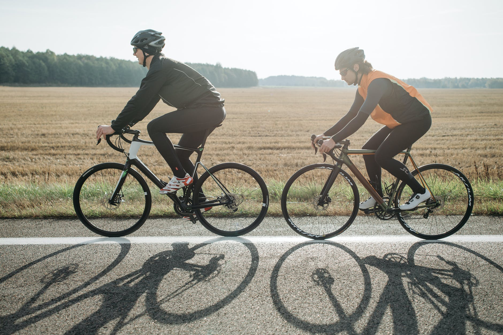

Click on a card to learn about injury prevention tips!
-
MileageDon't run too much too soon, or put yourself at risk of getting an injury.
-
Ice Ice BabyIce for 15 minutes after every long run. For shorter runs, you do not need to ice.
-
StretchStretch before AND after your runs! Stick with dynamic stretches before runs and static stretches after runs.
-
Cross-trainEspecially if it is strength training. I like to weight lift or cycle.